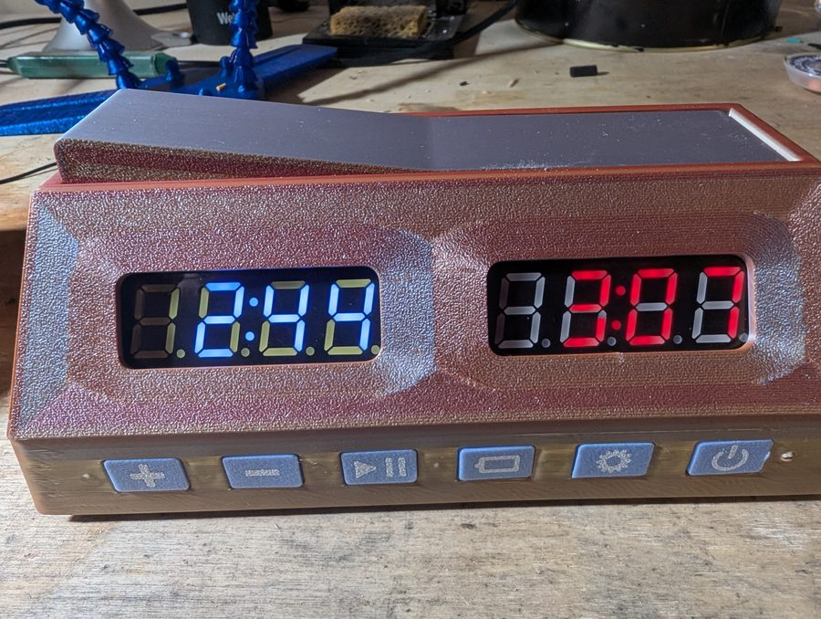
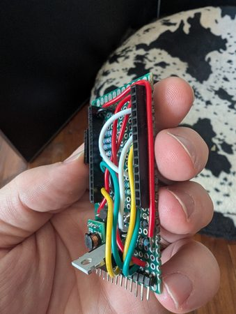
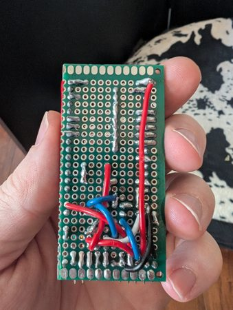

Hardware Build & Debugging

This is my build of an open source chess clock designed by baiblagoi and published on Instructables. The design uses a 3D printed case, two TM1637 seven-segment displays, six tactile buttons and a magnetic turn lever. Inside, a hand-soldered perf board boosts two 18650 cells to 5V and switches the power with a P-channel MOSFET. An ESP32 runs the clock and supports increments, bonus time after a set move and per-turn timing that can be exported over Bluetooth. I didn't design the clock. My work was the build itself and the changes I made to get it working with the parts I had.
The guide is written for a 38-pin ESP32-WROOM module, but I had ordered a 30-pin DevKitC by mistake. That meant remapping every display and button pin in the firmware, and the shorter board no longer fit the original mounting clamps. Some of its GPIO pins also had resistors already in line, which threw off the button network until I added resistors to compensate. I also moved the 5V booster behind the MOSFET so the power switch cuts it off completely.


Fitting everything into the case took more work. I flipped the ESP32 and perf board, which moved the board's built-in hall sensor away from the lever magnets. To fix that, I wired a separate hall sensor on the opposite side. Even with that sensor centered, the reading only changed by about 50 units between lever positions, so I set the turn-detection threshold carefully. The rest was mechanical. Stiff 22 AWG solid-core wire snapped several button legs, so I switched to spliced 30 AWG stranded wire. I sanded the female headers so they would sit side by side on the 12-pin connector, and packed foam around the TPU buttons to stop them rattling.
I used Claude as a debugging partner for the whole build. I described what I was seeing on the bench, then we worked through the ESP32 pinout to plan the remap and traced the unexpected readings back to the inline GPIO resistors. We also checked my changes to the power circuit and used raw sensor logs to tune the hall-sensor threshold. Working that way let me make design changes with confidence instead of guessing, and fix each problem as I hit it.
The finished clock works reliably on battery power. A clean build would have been easier, but adapting the design to different hardware taught me far more. You can see it running in the video I posted with my notes on the Instructables page.